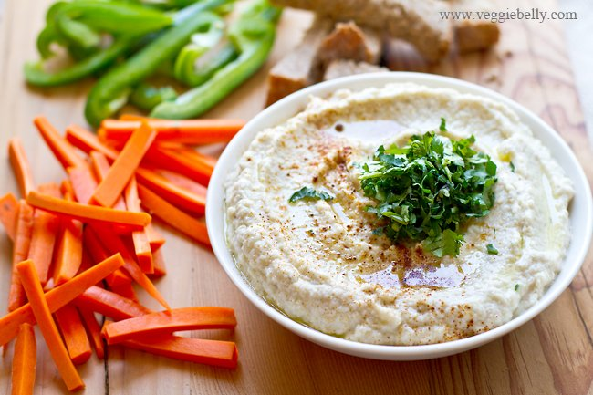

Cauliflower Hummus

This creamy, yet light cauliflower tahini dip is like a hummus, except it uses cauliflower instead of chickpeas! I spice the dip with some ground cumin, coriander and lemon juice and then garnish it with a big sprinkling of chopped cilantro. This is a great, healthy dip to enjoy with vegetables and some bread or crackers. I like to steam the cauliflower, but you can also toss it in olive oil and roast the cauliflower before making this dip. Serve this hummus-style healthy cauliflower dip with vegetable crudités (carrot, celery, bell peppers etc) and warmed pita bread or crackers.
Place the cauliflower florets in a steamer apparatus, cover and steam until the florets are very soft, about 15 minutes. If you don’t have a steamer, place the cauliflower florets, along with 1/2 cup water in a saucepan. Bring to a boil. Then reduce heat to low, cover and simmer the cauliflower until it is very soft, about 10 minutes. If all the water evaporates before the cauliflower is soft, add 1/4 cup water at a time. If there is any water remaining in the pan at the end, remove the lid, crank up the heat to medium-high and let it boil away. Make sure the cauliflower is not water logged or too wet before proceeding.
While the cauliflower is steaming, work on the spices. Place the coriander and cumin seeds in a small skillet. Toast on medium-low heat, shaking often until the spices are lightly golden and fragrant, about 5 minutes. Let the spices cool a little, then powder them in a food processor or mortar and pestle. If you are using ground coriander and cumin, skip this step and go to step 3.
Place the steamed, cooled cauliflower, and all other ingredients except the cilantro or parsley in a food processor, and blend into a smooth puree. If the dip is too thick, add water a few tablespoons at a time until your desired consistency is reached. If you want the hummus more creamy add more tahini at this point. Garnish with chopped cilantro or parsley.